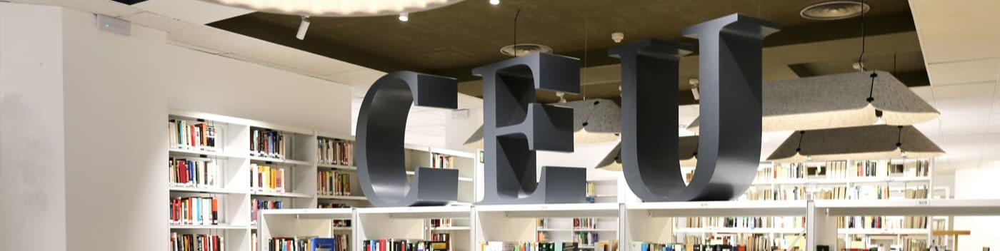

Mis Estudios: Una Base Integral y Multidisciplinaria
Mi trayectoria académica está cimentada en dos pilares fundamentales: el Grado en Farmacia y el Grado en Biotecnología. Estas formaciones me han permitido desarrollar una visión integral y multidisciplinaria en el ámbito de las ciencias de la salud y la investigación.
El Grado en Farmacia me proporcionó una sólida base en la atención al paciente, el manejo de medicamentos y la aplicación de principios científicos en la práctica farmacéutica. Por otro lado, el Grado en Biotecnología amplió mi perspectiva hacia el desarrollo de nuevas tecnologías, la investigación biológica y la innovación en terapias y diagnósticos.
Estos dos grados representan no solo mi pasión por las ciencias y la salud, sino también mi compromiso con el aprendizaje continuo y la contribución al avance científico y profesional.
"En la ciencia, como en la vida, la recompensa más grande no es el conocimiento, sino el aprendizaje constante."
— Carl Sagan
Mis Carreras en la Universidad CEU San Pablo: Formación de Excelencia y Futuro
Tuve el privilegio de realizar mis estudios del Doble grado de Farmacia y Biotecnología en la prestigiosa Universidad CEU San Pablo, una institución reconocida por su compromiso con la excelencia académica y la formación integral de sus estudiantes.
Durante mi paso por esta universidad, experimenté un enfoque educativo que combina la enseñanza teórica de alta calidad con una sólida formación práctica. El CEU San Pablo no solo fomenta el aprendizaje en el aula, sino también la adquisición de competencias aplicadas en laboratorios, proyectos de investigación y experiencias reales que preparan a los estudiantes para los desafíos del mundo profesional.
El Grado en Farmacia me brindó una formación completa en el ámbito farmacéutico, centrándose en la atención al paciente, el desarrollo de medicamentos y la aplicación de principios éticos y científicos en la práctica profesional. Por otro lado, el Grado en Biotecnología me permitió explorar la intersección entre la biología y la tecnología, adquiriendo conocimientos clave para contribuir al avance en áreas como la salud, la investigación y la innovación tecnológica.
Lo que hace destacable al CEU San Pablo es su visión de formar profesionales integrales, capaces de afrontar los retos del entorno laboral con conocimiento, ética y habilidades interpersonales. La cercanía de los profesores, las modernas instalaciones y el enfoque en la investigación y el trabajo interdisciplinar convierten a esta universidad en un referente educativo que no solo prepara para el presente, sino también para el futuro.
Estoy profundamente agradecida por las oportunidades que esta institución me ha brindado para desarrollarme académica y profesionalmente, y por el valor añadido que aporta a la creación de profesionales preparados para impactar positivamente en la sociedad.
"In Veritate Libertas"
— Lema de la Universidad CEU San Pablo